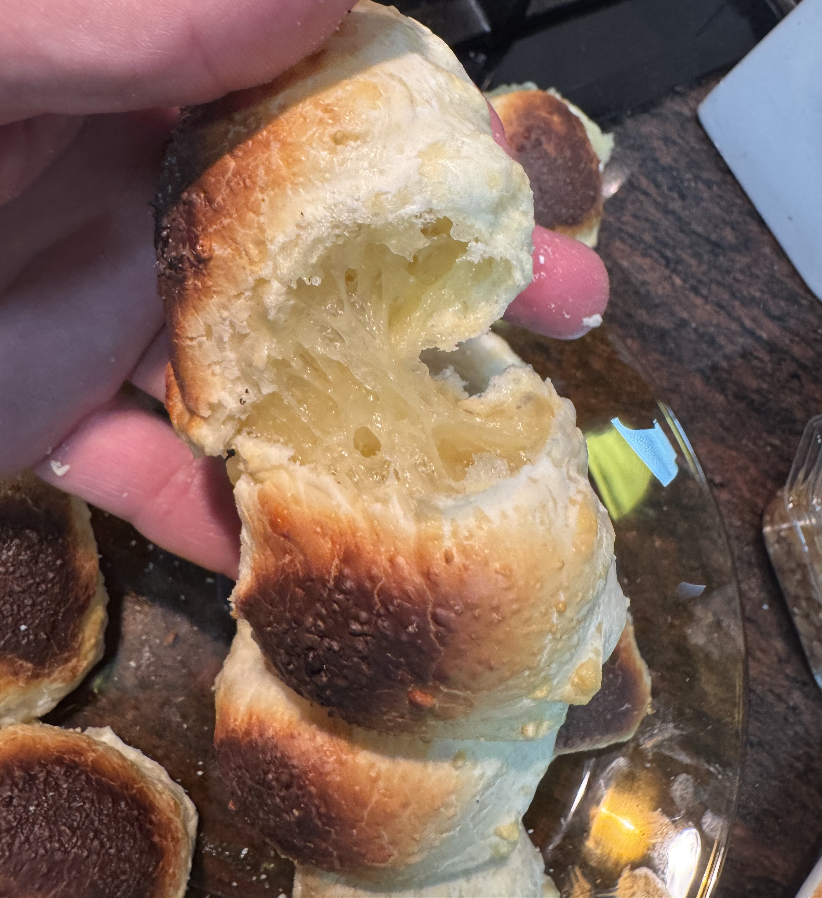
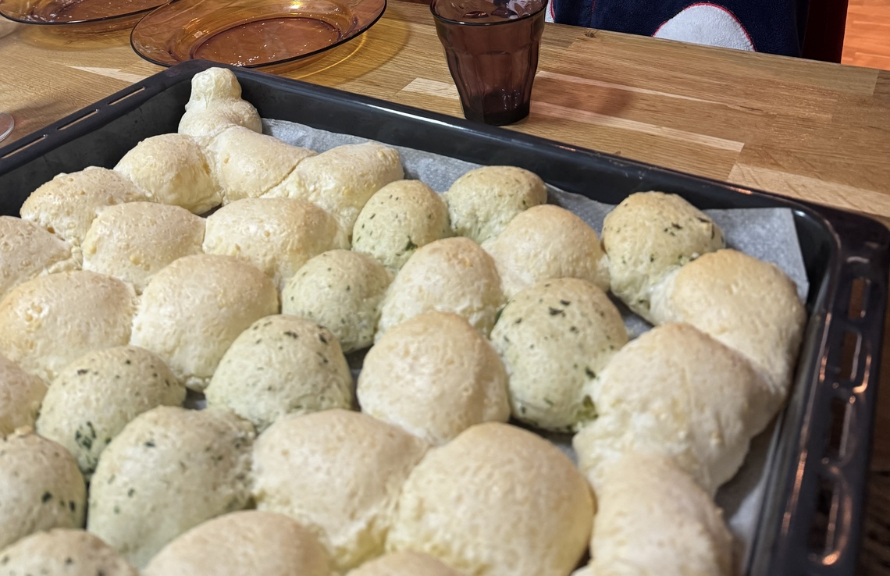

Cuñapes
Ingrédients
12×
- 250 g de farine de manioc
- 25 g d'huile, margarine ou beurre
- 1 oeuf
- 150 ml d'eau
- 250 g de fromage
- moule à muffins

Préparation
Étape 1
Faire un puits avec 250 g de farine de manioc « pandeyuca » (Colmaiz).
Étape 2
Ajouter 25 g d'huile, margarine ou beurre, 1 oeuf et une partie des 150 ml d'eau. Bien mélanger.
Étape 3
Ajouter le reste de l’eau et 250 g de fromage.
Étape 4
Répartir dans un moule à muffins.
Étape 5
Enfourner à 230ºC jusqu’à ce que ça lève, puis à 180ºC jusqu’à ce que ce soit doré (environ 30min au total).

Conseils
- Proportions : oeuf et graisse à 10% du poids de farine, eau à 60%.
- Fromage : entre 150g et 250g.
Résumé
250 g de farine de manioc
Faire un puits
25 g d'huile, margarine ou beurre
1 oeuf
150 ml d'eau
Ajouter
250 g de fromage
Ajouter
moule à muffins
Répartir
Enfourner 230ºC 180ºC